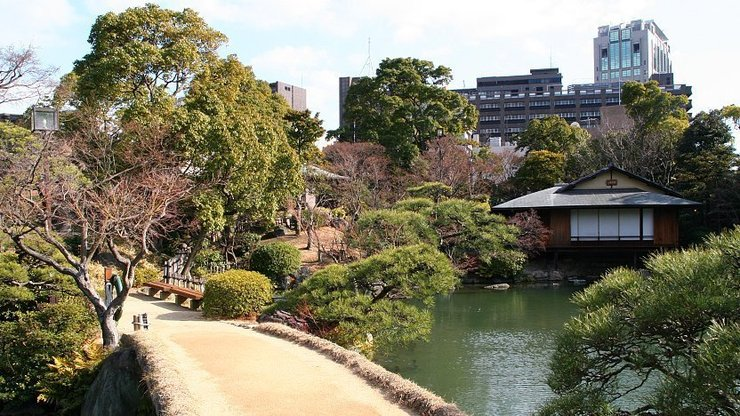

Sorakuen Garden
相楽園
Sorakuen (相楽園, Sōrakuen) is a traditional Japanese landscape garden in the center of Kobe. Completed in the early 20th century, the garden used to be part of the residence of Kodera Kenkichi, a former mayor of Kobe, but was opened to the public in 1941. The garden displays elements of Japanese gardens alongside a few unique buildings that speak to Kobe's cosmopolitan history.
While all but one of the buildings which originally stood in the garden were destroyed during World War II, the sole survivor, an ornamented European-style stable, remains today as an example of Western influence on Meiji Era Japanese architecture. In addition, the Hassam House, the stately former home of a foreign trader built in 1902, was moved to Sorakuen Garden from the Kitano district in 1963.
